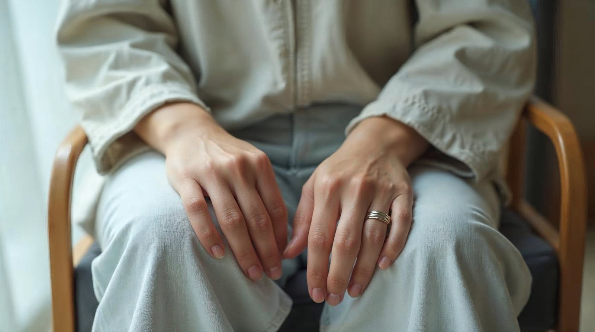
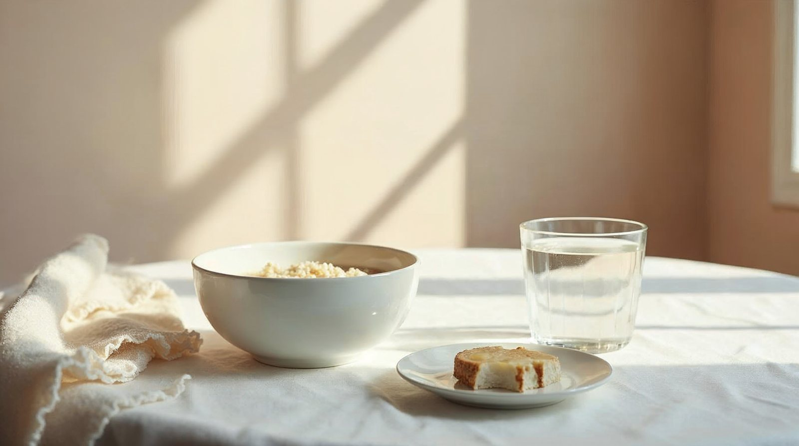
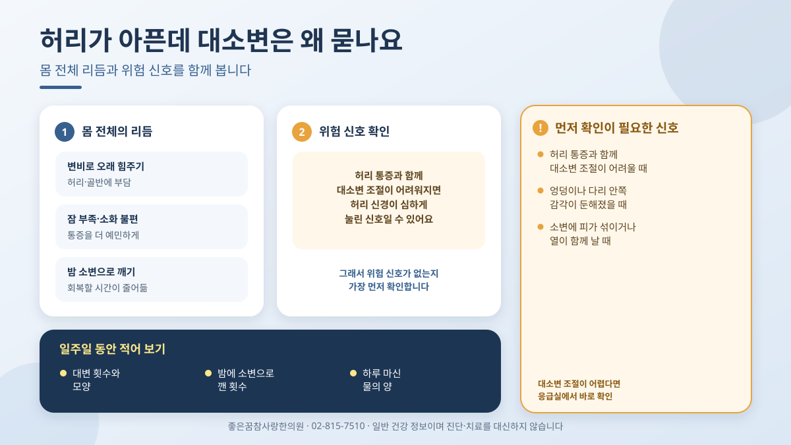

이종호 한의사 감수좋은꿈참사랑한의원 대표원장 (한의사 면허번호 19769)발행 2026-11-23 · 수정 2026-11-26
이 글의 차례
- 왜 이런 불편이 생길 수 있나요
- 대변과 소변 이야기에서 무엇을 알 수 있나요?
- 왜 변비가 있으면 허리가 더 불편하게 느껴질 수 있나요?
- 먼저 이렇게 여쭙니다
- 대소변 이야기는 진료 방향에 어떻게 쓰이나요?
- 소변은 어떤 점을 살펴보면 좋을까요?
- 밤에 소변 때문에 깨면 허리와 무슨 상관이 있나요?
- 일상에서 먼저 해 볼 수 있는 것
- 드시는 약이 배변에 영향을 줄 수 있나요?
- 소화가 불편한 날 허리도 더 불편하다면?
- 생리 전후로 허리와 아랫배가 함께 무겁다면?
- 배변을 편하게 하는 생활 습관
- 허리가 아플 때 화장실에서 조심할 자세
- 이런 이야기를 꺼내기 어렵다면?
- 상황별 예시
- 스스로 점검해 보세요
- 한의원에서 함께 살필 수 있는 경우
- 첫 방문은 이렇게 진행됩니다
- 얼마나 지켜보고 언제 상담할까요?
- 이렇게 기록해 오시면 상담이 쉬워집니다
- 이런 증상은 먼저 확인이 필요합니다
허리가 아파서 오셨는데 대변과 소변을 묻는 데는 두 가지 이유가 있습니다. 하나는 아픈 곳 하나만이 아니라 몸 전체의 리듬을 함께 보기 위해서이고, 다른 하나는 대소변 조절이 어려워진 허리 통증처럼 바로 확인이 필요한 위험 신호를 놓치지 않기 위해서입니다. 좋은꿈참사랑한의원은 아픈 곳과 더불어 몸의 온기, 소화, 잠, 대소변, 생활을 함께 살핍니다.
허리가 아파서 왔는데 화장실 이야기를 물으니 당황스러우셨다는 분도 계십니다. 저도 그 마음을 압니다. 그래서 왜 여쭙는지를 먼저 설명드리고, 편한 만큼만 말씀해 주시면 된다고 미리 말씀드립니다. 사소해 보이는 화장실 이야기 하나가 허리를 이해하는 데 생각보다 큰 실마리가 되는 경우가 많습니다.
왜 이런 불편이 생길 수 있나요
- 변비로 오래 힘을 주거나 배가 더부룩하면 허리와 골반 주변에 부담이 더해질 수 있습니다.
- 잠이 부족하거나 소화가 불편하면 통증을 더 예민하게 느끼는 경우가 있습니다.
- 밤에 소변 때문에 여러 번 깨면 잠이 끊겨 회복할 시간이 줄어듭니다.
- 드물게는 허리 신경이 심하게 눌려 대소변에 영향을 주는 경우도 있어, 대소변 질문은 이런 경우를 놓치지 않기 위한 확인이기도 합니다. 해당하는 신호는 글 아래쪽 '먼저 확인' 항목에 정리해 두었습니다.
대변과 소변 이야기에서 무엇을 알 수 있나요?
대변과 소변은 먹고, 소화하고, 물을 쓰고, 내보내는 몸의 하루를 그대로 보여 줍니다. 몇 가지만 여쭤도 몸의 리듬을 짐작하는 데 많은 도움이 되고, 대부분 1~2분이면 끝나는 짧은 질문입니다.
- 대변: 며칠에 한 번인지, 딱딱한지 무른지, 보고 나서 시원한지, 배가 아프거나 더부룩한지
- 소변: 낮에 몇 번 보는지, 밤에 깨서 보는지, 색이 진한지 옅은지, 시원하게 나오는지
- 물: 하루에 물과 음료를 얼마나 드시는지, 커피와 차는 몇 잔인지
예를 들어 대변이 며칠씩 딱딱하게 막히고 물도 적게 드신다면, 몸에 수분이 부족하고 활동량도 적은 생활일 수 있습니다. 이런 이야기는 허리를 살필 때 앉아 있는 시간과 움직임을 함께 보게 만드는 단서가 됩니다.
왜 변비가 있으면 허리가 더 불편하게 느껴질 수 있나요?
변비가 있으면 화장실에서 오래 앉아 힘을 주게 되는데, 이때 배 속 압력이 높아지면서 허리와 골반 주변 근육도 함께 긴장합니다. 이미 허리가 불편한 분은 이 순간 통증이 더 도드라진다고 말씀하시기도 합니다.
또 배에 가스가 차고 더부룩하면 몸을 앞으로 웅크리거나 허리를 덜 펴는 자세가 되기 쉽습니다. 이런 자세가 하루 종일 이어지면 허리 근육이 쉴 틈이 줄어듭니다. 그래서 허리를 보면서도 배가 편한지를 함께 여쭙습니다. 변비가 풀린 날 허리도 한결 가볍다고 느끼신다면, 그 느낌 자체가 둘이 이어져 있다는 단서가 됩니다.
먼저 이렇게 여쭙니다
- 대변은 며칠에 한 번, 어떤 모양으로 보시나요?
- 소변을 자주 보거나 밤에 깨서 보시나요?
- 소화가 불편하거나 배가 차가운 느낌이 있나요?
- 잠은 잘 주무시나요?
- 허리 통증이 생긴 뒤 대소변이 달라진 점이 있나요?
대소변 이야기는 진료 방향에 어떻게 쓰이나요?
같은 허리 통증이라도 몸 전체의 모습이 다르면 함께 챙길 것이 달라집니다. 예를 들어 배가 늘 차고 대변이 묽은 분은 배를 따뜻하게 하는 생활과 온열 치료를 함께 생각하고, 긴장하면 변비가 심해지는 분은 잠과 하루 일정을 함께 살핍니다.
한약 상담을 원하시는 경우에는 소화와 대변 상태가 특히 중요합니다. 같은 고민이라도 속이 예민한 분과 그렇지 않은 분은 살필 점이 다르고, 드시는 약도 먼저 확인합니다. 그래서 허리로 오셨더라도 이 이야기를 한 번은 여쭙게 됩니다.
소변은 어떤 점을 살펴보면 좋을까요?
소변은 하루에 몸이 물을 얼마나 쓰고 있는지를 가장 쉽게 보여 줍니다. 집에서도 몇 가지는 스스로 살펴볼 수 있습니다.
- 색: 옅은 노란색이면 대개 물이 넉넉한 편이고, 진한 노란색이 이어지면 물이 부족할 수 있습니다.
- 횟수: 낮에 너무 자주 간다면 커피나 차, 탄산음료를 얼마나 드시는지 함께 적어 봅니다.
- 밤 소변: 잠든 뒤 몇 번 깨서 가는지, 그날 저녁에 무엇을 얼마나 드셨는지 나란히 적어 봅니다.
비타민제를 드시면 소변 색이 진하게 보이기도 하니, 드시는 영양제도 함께 알려 주세요.
밤에 소변 때문에 깨면 허리와 무슨 상관이 있나요?
밤에 여러 번 깨면 잠이 끊겨 몸이 회복할 시간이 줄어듭니다. 잠이 부족한 날에는 같은 허리 통증도 더 크게 느껴진다는 분이 많습니다.
깨서 화장실에 가려고 일어나는 순간 허리가 뻣뻣해 아프다는 이야기도 자주 듣습니다. 누워 있다 바로 일어서기보다 옆으로 돌아누운 뒤 팔로 바닥을 짚고 천천히 일어나 보세요. 어두운 곳에서 서두르다 넘어지지 않도록 침실에서 화장실까지 작은 불을 켜 두시는 것도 도움이 됩니다.
저녁 늦게 물이나 차를 많이 드시는 편이라면, 낮에 충분히 드시고 잠들기 두세 시간 전부터는 조금 줄여 보세요. 밤에 깨는 횟수가 달라지는지 적어 보시면 진료 때 함께 볼 수 있습니다. 밤 소변이 늘어난 시기가 허리 통증이 시작된 시기와 겹치는지도 떠올려 봐 주세요.

일상에서 먼저 해 볼 수 있는 것
- 일주일 동안 대변 횟수와 모양을 간단히 적기
- 밤에 화장실 가는 횟수 세어 보기
- 하루 마시는 물의 양 확인하기
- 변기에 오래 앉아 힘주지 않기
- 통증과 함께 달라진 생활 습관 떠올려 보기
드시는 약이 배변에 영향을 줄 수 있나요?
허리가 아파 진통제를 드시기 시작한 뒤로 변비가 생겼다는 이야기를 종종 듣습니다. 일부 진통제와 다른 약은 장의 움직임을 더디게 해 변비를 만들기도 하고, 반대로 속을 불편하게 하기도 합니다.
그렇다고 드시던 약을 임의로 줄이거나 끊으시면 안 됩니다. 약을 드시기 시작한 날과 변비가 생긴 날을 적어 오시면 함께 보고, 약에 대한 고민은 처방한 병원에 함께 여쭤 보시도록 안내합니다. 변비약을 자주 드신다면 얼마나 자주, 어떤 약을 드시는지도 알려 주세요.
소화가 불편한 날 허리도 더 불편하다면?
과식하거나 늦은 밤에 먹고 잔 다음 날, 배가 더부룩하면서 허리도 더 무겁다는 분이 있습니다. 배가 불편하면 배와 허리를 둘러싼 근육이 함께 긴장하고, 잠도 얕아지기 쉽기 때문입니다.
- 저녁은 잠들기 세 시간 전쯤 마치고, 양은 조금 덜 배부를 만큼으로 줄이기
- 배가 찬 느낌이 들면 배와 허리를 함께 덮는 옷 입기
- 식사 뒤 바로 눕기보다 10분쯤 가볍게 걷기
이렇게 해 본 날과 그렇지 않은 날의 허리 느낌을 비교해 보시면, 배와 허리가 얼마나 이어져 있는지 스스로 느끼실 수 있습니다.
생리 전후로 허리와 아랫배가 함께 무겁다면?
여성분께는 허리 이야기와 함께 생리 주기를 여쭙기도 합니다. 생리 전후로 아랫배가 묵직하고 허리가 뻐근하며, 대변이 묽어지거나 반대로 막히는 분이 적지 않기 때문입니다.
허리 통증이 생리 주기와 맞물려 오르내린다면, 생리 시작일과 허리가 불편했던 날을 함께 적어 보세요. 허리만의 문제로 볼지, 아랫배와 골반의 리듬까지 함께 볼지 정하는 데 도움이 됩니다. 임신 가능성이 있거나 임신 중이시라면 진료 전에 먼저 알려 주세요.
배변을 편하게 하는 생활 습관
- 아침 식사 뒤 10~20분쯤 화장실에 앉아 보는 시간을 정해 두기
- 변기에 앉을 때 낮은 받침대에 발을 올려 무릎을 엉덩이보다 조금 높게 하기
- 변기에 앉아 휴대폰을 보며 오래 있지 않기(5분쯤 지나도 소식이 없으면 일어났다 다시 오기)
- 채소와 과일, 잡곡을 조금씩 늘리고 물도 함께 챙기기
- 허리가 아파도 할 수 있는 범위에서 하루 20~30분 걷기
허리가 아파 움직임이 줄면 장의 움직임도 함께 더뎌질 수 있습니다. 통증이 크지 않은 범위에서 10분씩 나눠서라도 조금씩 걷는 것이 허리와 배 모두에 도움이 되는 경우가 많습니다.
허리가 아플 때 화장실에서 조심할 자세
허리가 아픈 분은 화장실에서 몸을 숙이거나 비트는 순간 통증이 찌르듯 올라온다고 말씀하시는 경우가 많습니다.
- 변기에 앉을 때는 허리를 굽히기보다 무릎을 굽혀 천천히 내려앉기
- 휴지를 쓸 때 상체를 크게 비틀지 말고, 몸을 살짝 앞으로 기울인 채 손만 움직이기
- 세수할 때는 한 발을 앞으로 내밀고 무릎을 살짝 굽혀 허리 숙임을 줄이기
- 일어날 때는 세면대나 손잡이를 짚고 다리 힘으로 일어서기
- 아침에 일어나자마자 허리가 가장 뻣뻣하다면, 화장실에 가기 전 누운 채로 무릎을 세우고 좌우로 천천히 몇 번 흔들어 풀어 주기
샤워할 때 발을 씻으려고 한쪽 다리로 서서 허리를 숙이는 동작도 부담이 됩니다. 욕실 의자에 앉아서 씻거나, 발을 욕조 가장자리에 올려 허리 숙임을 줄여 보세요.
이런 이야기를 꺼내기 어렵다면?
대소변 이야기는 가족 앞에서 말하기 쑥스러울 수 있습니다. 함께 오신 분이 있어도 진료실에서 잠시 따로 여쭤 볼 수 있으니 편하게 말씀해 주세요.
말로 하기 어려우면 메모를 건네주셔도 됩니다. '사흘에 한 번, 딱딱함, 밤에 두 번' 정도만 적어 주셔도 충분하고, 대변 모양은 '딱딱한 덩어리, 보통, 무름, 물 같음' 가운데 가까운 것을 골라 주셔도 됩니다. 들은 내용은 진료에만 쓰고, 다른 분과 나누지 않으니 안심하셔도 됩니다.
상황별 예시
- 예를 들어 하루 대부분을 앉아서 일하는 직장인이 변비와 허리 뻐근함이 함께 심해졌다면, 앉아 있는 시간과 물 마시는 양, 점심 뒤 걷는 시간을 함께 여쭙니다. 한 시간마다 일어나 물 한 잔을 마시고 오는 습관부터 같이 정해 보고, 다음 방문 때 대변과 허리가 어땠는지 이어서 여쭙니다.
- 예를 들어 이삿짐을 옮긴 뒤 허리를 다쳐 며칠 누워 지내며 진통제를 드시다가 변비가 생긴 경우라면, 드신 약과 누워 지낸 기간을 함께 보고, 허리가 허락하는 범위에서 움직임을 늘려 가는 방법을 이야기합니다.
- 예를 들어 밤에 소변 때문에 서너 번 깨고 아침마다 허리가 뻣뻣하다는 어르신이라면, 저녁에 드시는 물과 차의 양, 다니시는 병원과 약을 함께 여쭙습니다. 소변 문제 자체는 비뇨의학과 진료를 함께 받으시도록 권하기도 합니다.
스스로 점검해 보세요
- 대변을 사흘 넘게 못 보는 일이 자주 있다.
- 화장실에서 오래 힘을 줘야 하고, 보고 나서도 시원하지 않다.
- 배가 자주 더부룩하고 가스가 찬다.
- 밤에 소변 때문에 두 번 넘게 깬다.
- 하루에 마시는 물이 컵으로 서너 잔이 안 된다.
- 허리가 아픈 뒤로 걷는 시간이 눈에 띄게 줄었다.
해당하는 항목이 있다면 진료 때 함께 알려 주세요. 허리만 볼 때보다 생활에서 바꿔 볼 것이 더 분명해집니다. 하나도 해당하지 않는다면 그것 또한 몸 상태를 이해하는 데 쓸모 있는 정보입니다.

한의원에서 함께 살필 수 있는 경우
- 대소변과 소화, 잠을 함께 살펴 통증과 몸 전체의 리듬을 이해합니다.
- 허리 통증과 함께 변비처럼 배변 습관이 달라진 경우 생활 리듬을 함께 조정합니다.
- 다른 검사가 필요하다고 판단되면 다른 의료기관을 안내합니다.
좋은꿈참사랑한의원에서는 먼저 아픈 동작과 함께 대소변, 소화, 잠을 충분히 듣고, 위험 신호가 없는지부터 확인합니다. 그다음 진맥을 기본으로 하고 필요하면 복진으로 몸 상태를 살피고, 허리 움직임을 함께 본 뒤 침, 약침, 추나, 한약 상담 가운데 상태에 맞는 방법을 정합니다.
귀가 전에는 집에서 적어 볼 항목을 알려 드리고, 글 아래쪽 '먼저 확인' 항목도 함께 짚어 드립니다.
첫 방문은 이렇게 진행됩니다
- 이야기 듣기: 허리가 아픈 동작과 시기, 그리고 대소변과 소화, 잠, 드시는 약을 먼저 충분히 듣고, 위험 신호가 없는지부터 확인합니다.
- 맥 짚기: 모든 분께 맥부터 짚어 몸 전체 상태를 살핍니다.
- 허리 움직임 확인: 서 있는 모습과 허리를 숙이고 젖히는 동작, 걷는 모습을 보고, 아픈 자리를 손으로 짚어 봅니다.
- 필요하면 복진: 변비나 더부룩함이 있으면 누우신 상태에서 배의 긴장과 온기를 살핍니다.
- 방향 정하기: 침, 약침, 추나, 한약 상담 가운데 상태에 맞는 방법을 정하고, 한약은 드시는 약을 먼저 확인한 뒤 이야기합니다. 추나는 진찰 결과에 따라 판단하며, 건강보험(또는 자동차보험) 적용 여부는 방문 전 전화로 확인해 주세요.
얼마나 지켜보고 언제 상담할까요?
- 허리 통증과 변비가 함께 있다면 물과 걷기, 화장실 습관을 1~2주 조정해 보며 대변과 허리 느낌을 함께 적어 봅니다.
- 생활을 바꿔도 변비가 이어지고 허리 불편도 그대로라면 상담을 받아 보세요.
- 변비나 설사가 몇 주 넘게 이어지면서 평소 배변 습관과 크게 달라졌다면 내과 진료도 함께 받아 보시길 권합니다.
이렇게 기록해 오시면 상담이 쉬워집니다
- 일주일 동안의 대변 횟수와 모양
- 밤에 소변 때문에 깬 횟수
- 허리 통증이 시작된 날과 그 뒤 달라진 점
- 복용 중인 약(변비약, 소변 관련 약 포함)
기록은 일주일이면 충분합니다. 달력에 대변을 본 날은 동그라미, 밤에 깬 횟수는 숫자로 적고, 허리가 특히 불편했던 날에는 별표를 해 두세요. 한눈에 보면 배변과 잠, 허리 통증이 같은 날 겹치는지 쉽게 보입니다.
이런 증상은 먼저 확인이 필요합니다
- 허리 통증과 함께 대소변 조절이 어렵거나 소변이 잘 나오지 않는 경우
- 엉덩이, 항문 주변, 허벅지 안쪽(안장 부위) 감각이 둔해진 경우
이런 신호가 있으면 한의원보다 가까운 병원이나 응급실을 먼저 찾으세요.

여쭙는 것
- 대변은 며칠에 한 번, 어떤 모양으로 보시나요?
- 소변을 자주 보거나 밤에 깨서 보시나요?
- 소화가 불편하거나 배가 차가운 느낌이 있나요?
생활에서 해 볼 것
- 일주일 동안 대변 횟수와 모양을 간단히 적기
- 밤에 화장실 가는 횟수 세어 보기
- 하루 마시는 물의 양 확인하기
한의원에서 함께 살필 것
- 대소변과 소화, 잠을 함께 살펴 통증과 몸 전체의 리듬을 이해합니다.
- 허리 통증과 함께 변비처럼 배변 습관이 달라진 경우 생활 리듬을 함께 조정합니다.
- 다른 검사가 필요하다고 판단되면 다른 의료기관을 안내합니다.
먼저 확인이 필요한 신호
- 허리 통증과 함께 대소변 조절이 어렵거나 소변이 잘 나오지 않는 경우
- 엉덩이, 항문 주변, 허벅지 안쪽(안장 부위) 감각이 둔해진 경우
한눈에 보는 표
| 구분 | 핵심 |
|---|---|
| 여쭙는 것 | 대변은 며칠에 한 번, 어떤 모양으로 보시나요? 소변을 자주 보거나 밤에 깨서 보시나요? |
| 생활에서 해 볼 것 | 일주일 동안 대변 횟수와 모양을 간단히 적기 밤에 화장실 가는 횟수 세어 보기 |
| 한의원에서 함께 살필 것 | 대소변과 소화, 잠을 함께 살펴 통증과 몸 전체의 리듬을 이해합니다. 허리 통증과 함께 변비처럼 배변 습관이 달라진 경우 생활 리듬을 함께 조정합니다. |
| 먼저 확인이 필요한 신호 | 허리 통증과 함께 대소변 조절이 어렵거나 소변이 잘 나오지 않는 경우 엉덩이, 항문 주변, 허벅지 안쪽(안장 부위) 감각이 둔해진 경우 |
자주 묻는 질문
이런 질문이 부담스러우면 어떻게 하나요?
편한 만큼만 말씀하셔도 됩니다. 메모로 전해 주셔도 괜찮습니다.
통증 치료와 상관이 있나요?
몸 전체 상태를 알면 진료 방향을 정하는 데 도움이 되고, 위험 신호를 놓치지 않는 데도 필요합니다.
변비약을 먹고 있으면 알려야 하나요?
네. 드시는 약은 모두 알려 주세요. 임의로 끊지 않고 그 상태에서 맞는 방법을 찾습니다.
허리가 아파서 변기에 앉고 일어나기가 힘들어요.
변기 옆에 손잡이나 단단한 지지대가 있으면 짚고 천천히 앉고 일어나세요. 낮은 받침대에 발을 올리면 힘을 덜 주고도 볼 수 있습니다. 진료 때 아픈 동작을 함께 보며 요령을 알려 드립니다.
진료 시간은 어떻게 되나요?
좋은꿈참사랑한의원은 평일 09:30~20:00(점심 13:00~14:00), 토·일·공휴일 09:30~15:00에 진료합니다.
좋은꿈참사랑한의원은 재진 때 지난번 이야기부터 이어서 여쭙니다. 진료시간과 예약은 오시는 길에서 확인하세요.
어디서 상담받을 수 있나요?
좋은꿈참사랑한의원은 서울 동작구 만양로2길 2 신성빌딩 3층·5층(서울 동작구 상도동, 7호선 상도역 3번 출구 근처)에 있습니다. 한의사 3명(이종호 대표원장, 조영기 수석진료원장, 정원영 진료원장)이 진료합니다. 진료시간은 평일 09:30~20:00(점심 13:00~14:00), 토·일·공휴일 09:30~15:00이며, 방문 전 전화로 확인을 권합니다. 예약은 네이버 예약, 카카오톡 상담, 전화 02-815-7510로 받습니다.
이 글은 일반적인 건강 정보이며 개인의 진단이나 치료를 대신하지 않습니다. 증상이 있거나 복용 중인 약이 있다면 진료를 통해 확인하세요. 치료 효과는 개인마다 다를 수 있습니다.
작성 기준: 일반적으로 알려져 있는 건강 정보를 참고해 정리했습니다(대표원장 감수). 증상 기록은 1~2주 동안 하루 1회, 비슷한 시간에 적어 오시면 지난 상태와 비교하기 쉽습니다.